기업/기관 회원가입 사용자
💡 안내
기업·기관 소속으로 사업에 신청하는 경우 기업회원/기관회원으로 가입해야 합니다.가입 전 소속 기업의 공동인증서를 미리 준비해주세요.
1. 회원 유형 선택
홈 화면에서 「회원가입」 클릭 → 「기업회원 가입/기관회원 가입」 선택

2. 약관 동의
이용약관·개인정보 처리방침을 확인하고 전체 동의 후 「확인」 클릭
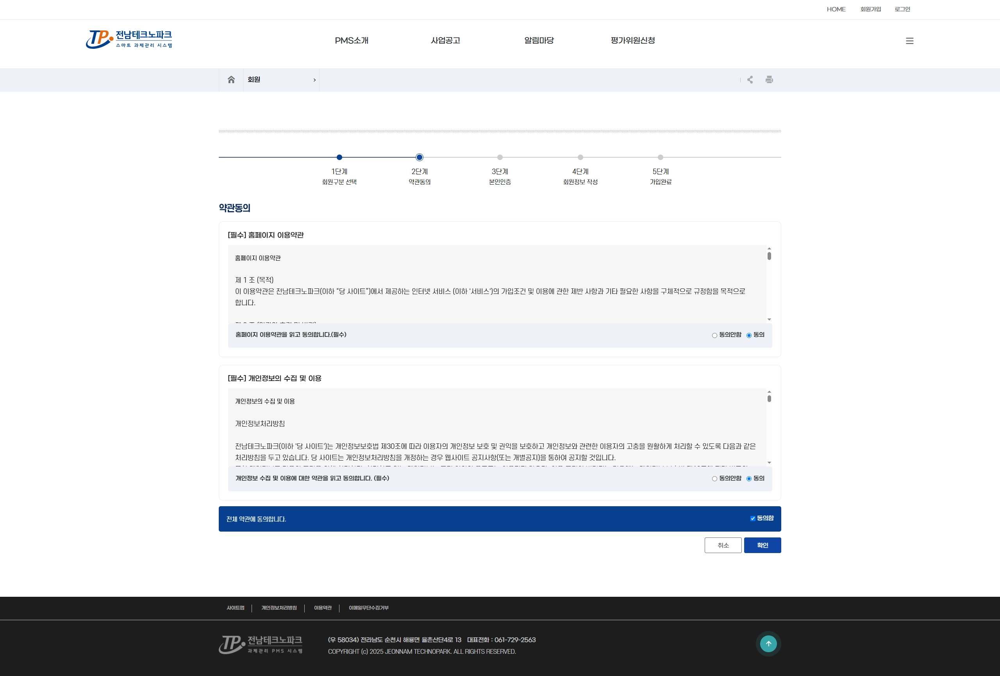
3. 기업(기관) 조회 / 등록 선택
소속 기업/기관이 이미 PMS에 등록되어 있으면 「기업/기관 조회」, 처음 등록하는 경우 「기업/기관 등록」 선택
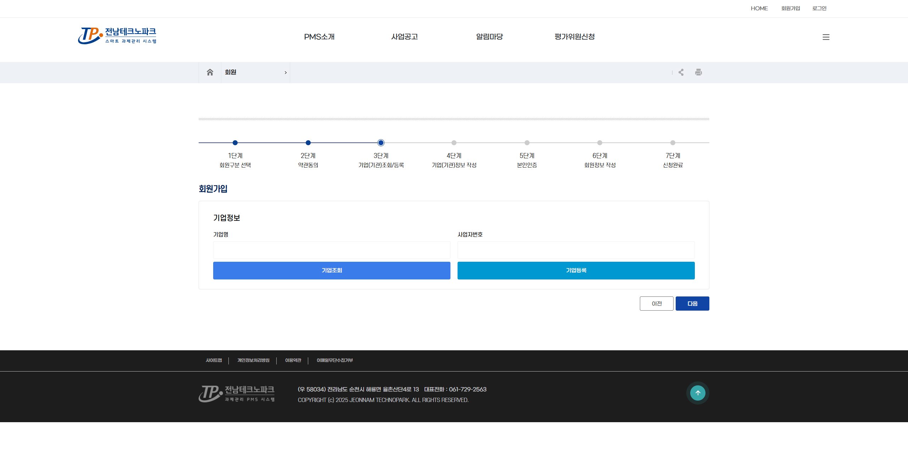
4. 기업/기관 조회
사업자등록번호 또는 기업명으로 검색 → 해당 기업 선택 후 다음 단계로 이동
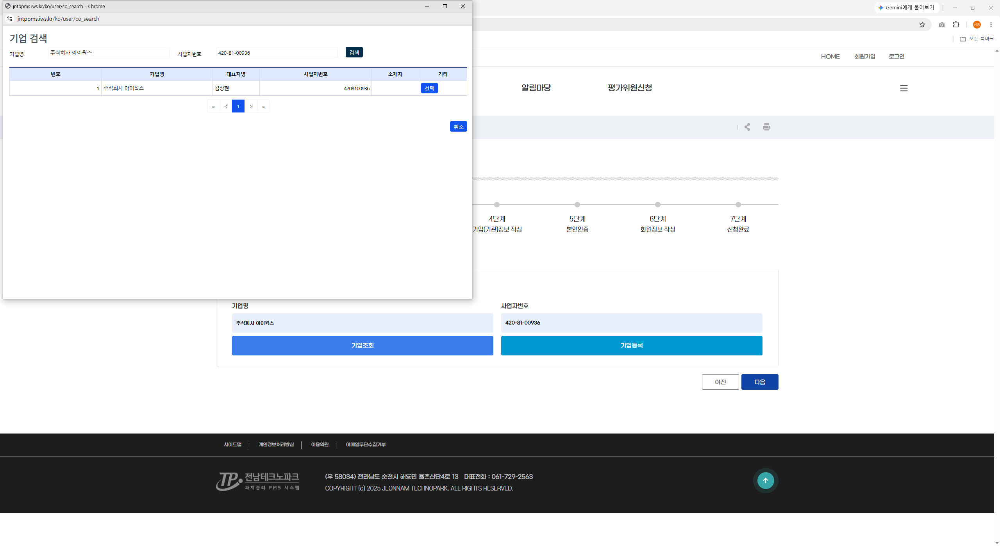
💡 안내
조회 결과에 소속 기업이 없으면 「기업/기관등록」으로 진행하세요. (아래 5 ~ 6단계)
5. 공동인증서 인증 (기업 신규 등록 시)
「인증서 선택」 클릭 → 공동인증서 선택 후 비밀번호 입력하여 인증
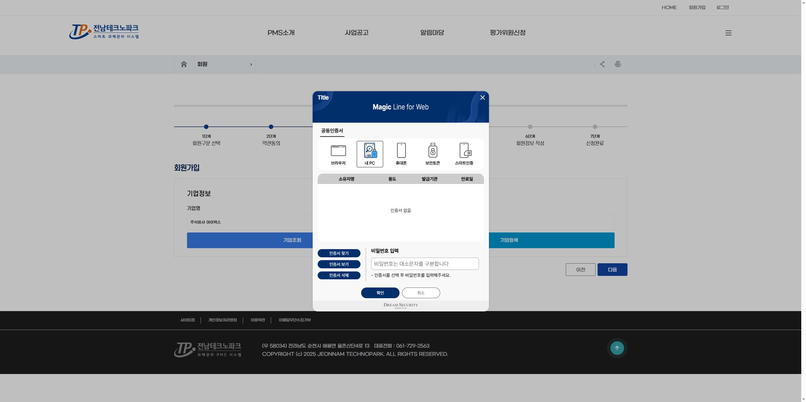
6. KED 데이터 조회 (기업 신규 등록 시)
기업(기관)정보 작성 화면에서 「KED데이터 조회」 클릭 → 기업 정보를 자동으로 불러와 입력 양식에 반영
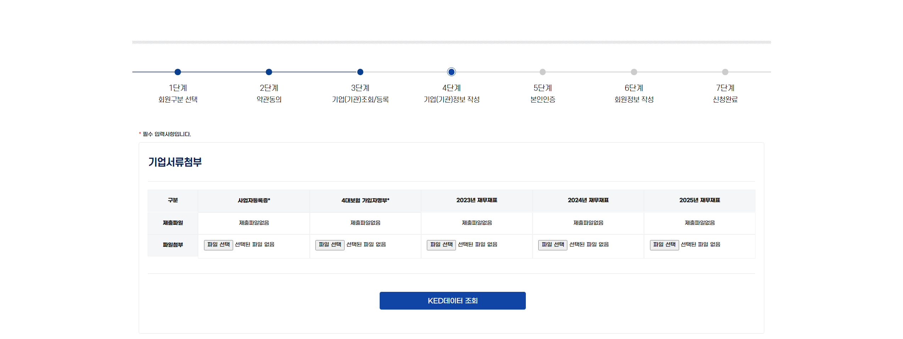
💡 안내
KED에 데이터가 없는 경우 자동 연동이 되지 않습니다. 이 경우 기업 정보를 직접 입력하세요.
7. 기업(기관) 정보 작성 (기업 신규 등록 시)
기업명·사업자등록번호·주소·대표자 등 기업 정보를 입력하고 「등록」 클릭
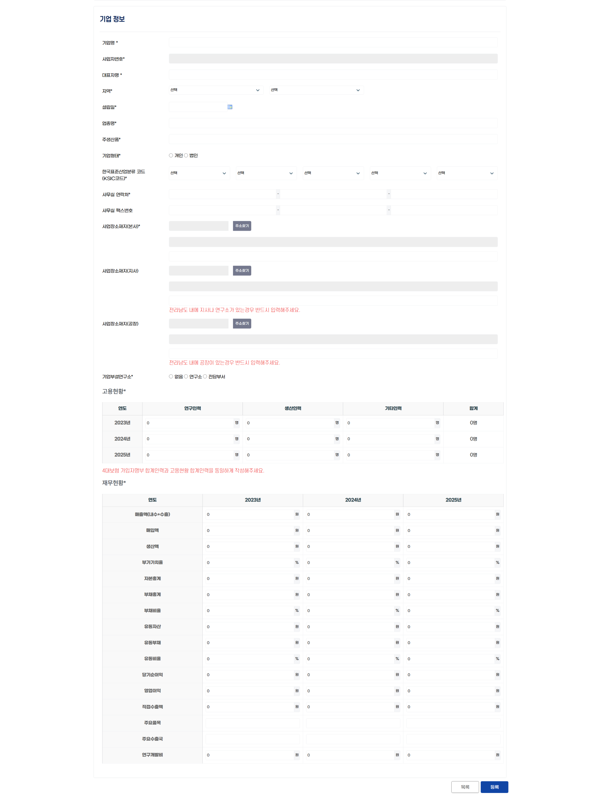
⚠️ 중요
기업을 최초 등록하는 경우, 본인인증 및 회원가입을 완료한 사람이 해당 기업의 최고관리자로 등록됩니다.이후 소속 직원이 동일 기업으로 회원가입을 신청하면, 최고관리자가 회원관리에서 승인해야 정식 구성원으로 활동할 수 있습니다. (아래 10단계 참고)
⚠️ 주의
사업자등록증과 동일한 정보로 입력해야 합니다. 잘못 입력하면 이후 협약·정산 단계에서 오류가 발생할 수 있습니다.
8. 본인인증
휴대폰 본인인증 진행 → 인증번호 입력 후 확인
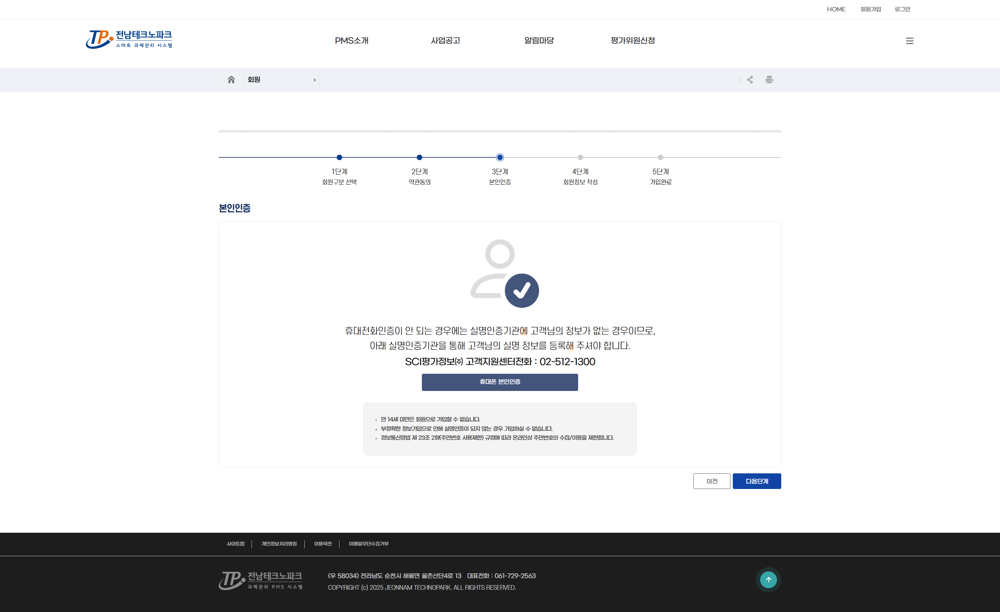
9. 회원정보 작성
아이디·비밀번호·이메일·소속 부서 등 정보를 입력하고 「가입완료」 클릭
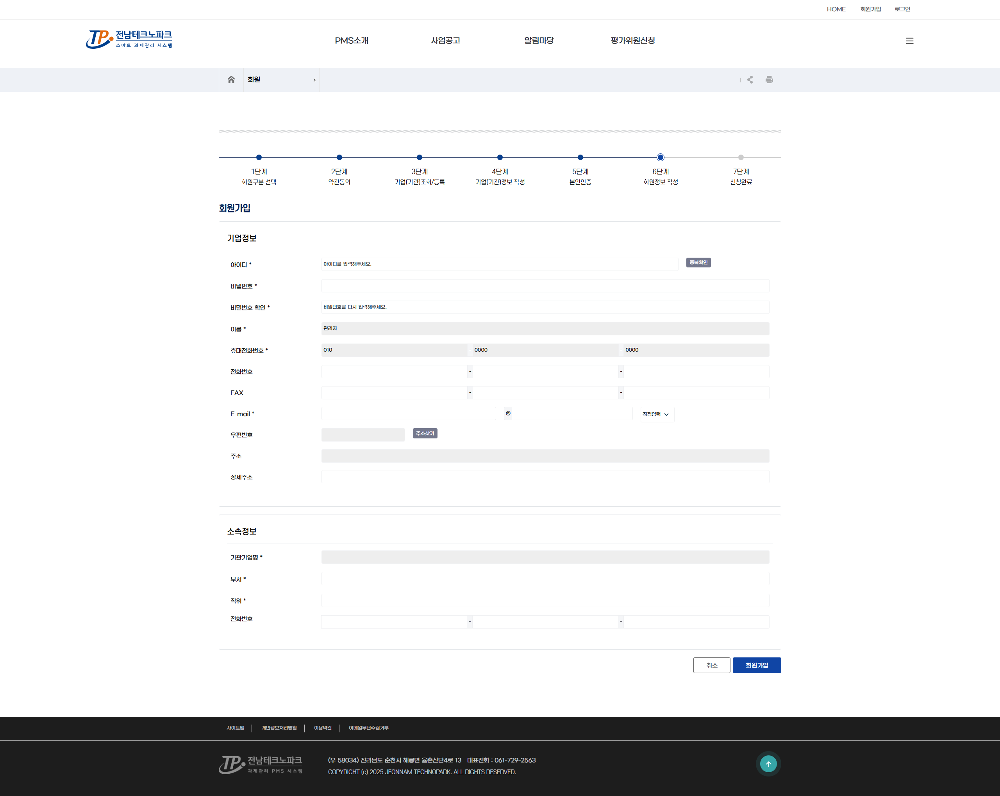
💡 안내
가입 완료 후 로그인하면 PMS 메인 화면으로 이동합니다. 이후 공고 신청으로 진행하세요.
💡 안내
기업/기관이 신규로 등록된 후, 최초로 해당 기업/기관 소속으로 가입한 사람이 자동으로 그 기업/기관의 최고관리자가 됩니다.최고관리자는 이후 같은 기업/기관으로 가입 신청하는 소속 직원을 승인·거절할 수 있습니다.
10. 소속회원 승인관리 (기업 최고관리자)
「회원관리」 탭의 회원목록에서 소속 직원의 등록상태 확인 (승인 완료: 파란색 「승인」 배지 / 승인 대기: 「신청」 배지)
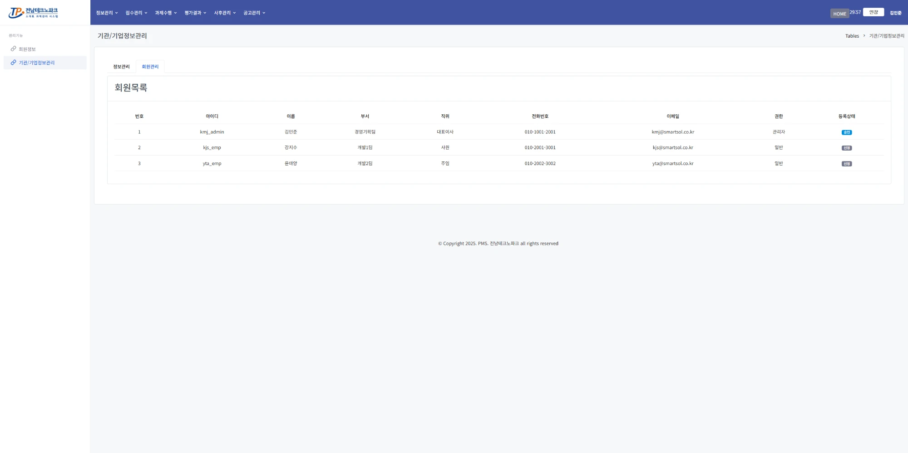
승인 대기 중인 회원의 등록상태 배지를 클릭하면 직원정보 상세 화면으로 이동
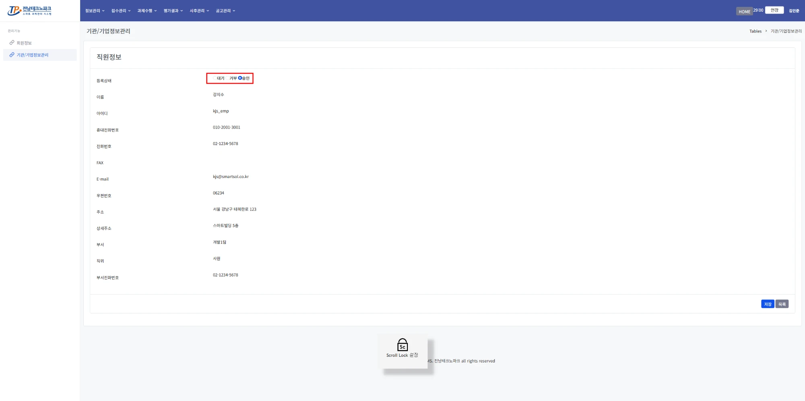
등록상태에서 「승인」 선택
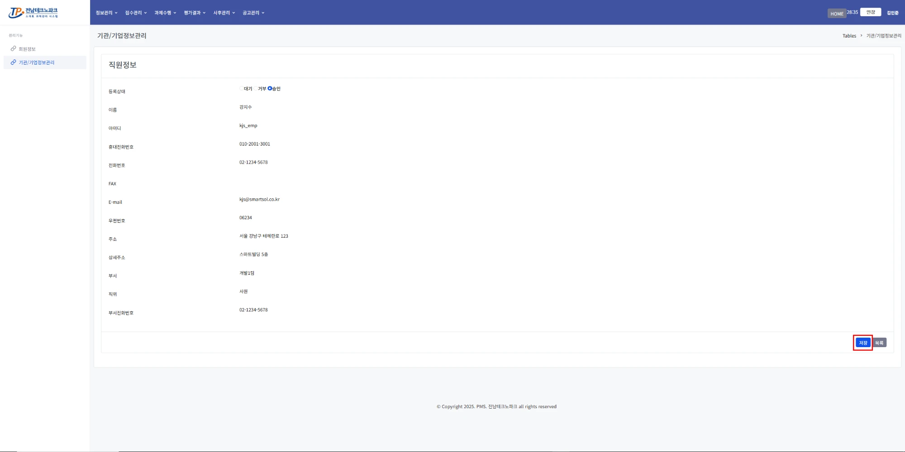
「저장」 클릭 → 목록 화면에서 해당 직원 상태가 「승인」으로 변경됨
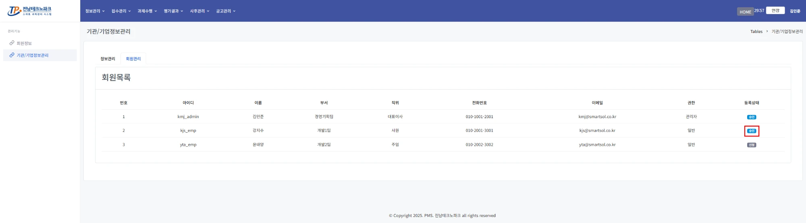